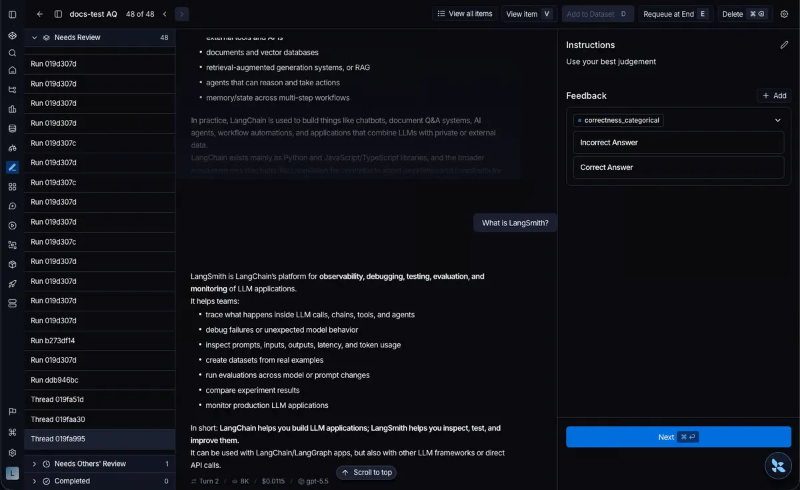
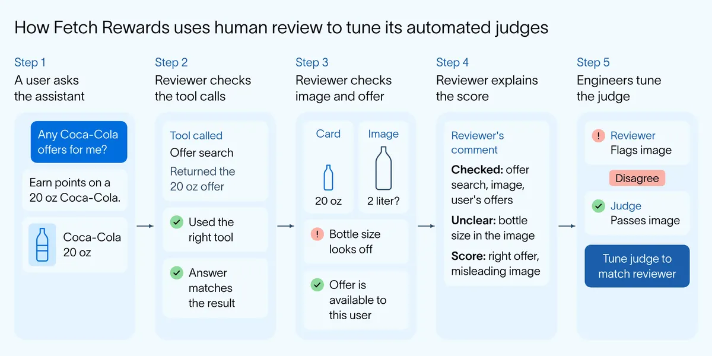

人類複核：把專家的理由寫成可重跑的評測
導讀原文：LangChain〈Why human insight is a strategic advantage for building better agents〉— 產品觀點文，說明 human-in-the-loop 的三條原則，並發布 LangSmith 標註佇列的 thread 檢視
代理愈跑愈長，錯因可能藏在前面幾輪。把專家的「為什麼錯」寫成評分與理由，它就成了下一輪的判準，而非用完即散。
本站重繪，非原文圖；原文以四步條列與一句箭頭式敘述交代此循環，未給排序圖。三種標籤用途並列於下表。
trace 記錄「一次嘗試」的全部：使用者訊息、模型回覆、工具呼叫與中間步驟。團隊用它除錯、評分、決定修什麼。工程師或線上 evaluator 覺得不對就 flag。
原文的關鍵一句：flag 是訊號，不是解釋，它通常不足以指出該改哪裡。分工於是很清楚——自動化決定審什麼，人提供建構者能動手的判斷。
原文把這層判斷說成差異化的來源：它高度綁定公司、角色與個人專長；引用 Snoop Dogg 在 CSU Long Beach 畢業演講那句「沒有人能像你一樣做你」。自動評測補不上這一塊。
有價值的不是分數，是理由。專家能說出對錯的原因，以及高品質代理該怎麼做。佇列裡的一則註解還會回頭指出更大的毛病：某個 eval 在評錯行為，或 rubric 有缺口，該修的是評測器本身。
| 標籤用途 | 原文做法 | 什麼算奏效（編輯推論） |
|---|---|---|
| 對齊 LLM judge | 同一批 trace 上比 judge 與人的分數，不一致就改 judge prompt 或 rubric | 人機分歧的案例變少 |
| 更新線上 evaluator | 人一直抓到同一個漏，就改該負責的 evaluator，再對新流量重跑 | 同類漏改由機器先抓到 |
| 建 golden dataset | 把品質好的標註升級成資料集，agent 或 prompt 改動時跑離線實驗 | 上線前就知道會不會退化 |
三種用途為原文並列項，無先後順序；右欄是編輯依「用途」推出的驗收訊號，原文未給。
多輪代理的單位是整段對話，不是一格 step
只看多輪對話裡的一步，會漏掉解釋最終答案的前文、工具呼叫與決定。原文的比喻：改一句話，不等於改那句話所在的文章。

回覆單獨看沒錯，卻可能違反使用者前幾輪說過的事。錯發生在幾輪之前，直到最後一則才顯形；代理跑得愈長、步驟愈多，這段消失的歷史愈難靠人工拼回。
原文的結論：多輪代理的複核單位就是對話。thread 把整個 session 變成一個審查項目，複核者是讀互動，不是先拼互動。
trajectory 則是對話的另一種視圖：按發生順序列出訊息與工具呼叫，去掉巢狀 run tree 等重複資訊。佇列項目仍是 thread，因為被判斷的是對話本身——領域專家不必先學會讀 trace 樹。
（編輯觀點：單位與評分粒度是兩件事。原文的 Fetch Rewards 案例裡，複核者其實逐輪評分，再回查 trace metadata 補脈絡；thread 給的是檢視容器，不是唯一計分單位。）
客戶案例：句子流暢，不代表對得上資料
Fetch Rewards 的複核者評的是 AI Rewards Assistant 的單輪輸入與輸出，但逐字稿只是起點。答案再流利，沒對上真實資料就是錯的。

查法是把答案回推到工具：使用者問可樂優惠時，先確認助理真的搜了優惠、回覆對得上搜回的結果。再看圖與可用性——20 oz 的卡片不能配 2 公升瓶身；推薦也要查該使用者真的領得到。
遇到模糊案例（圖幾乎對、優惠合法卻沒用、答對但沒中意圖），複核者要寫清查了什麼、哪裡不確定、為何給這個分。工程師再拿這些理由，找出自動 judge 的邏輯偏差並調整。
（編輯觀點：全文沒有量化成效——沒有錯誤率、沒有標註工時、沒有複核吞吐，唯一具體數字是那個可樂瓶尺寸。三條原則可照用，投不投資得自己算。）
帶走三件事
flag 只是訊號，理由才是資料。沒寫下哪個維度壞、好的長怎樣，下一輪還是得重問專家。
複核單位選對話，計分單位看情況。誤判可能發生在好幾輪之前，只看一格 step 會把它當成隨機。
這篇是產品文，效益得自己算。把專家工時對上被換掉的誤判，才知道划算不划算。
同一主題的其他館藏
導讀為本站編輯內容（AI 摘解自官方原文與館藏重點，非官方文件）；引述數字與案例出自 LangChain 原文，圖解與小標為編輯整理，圖解 A 與表格右欄為本站重繪／推論。內容經對照原文的獨立事實審查後發布。